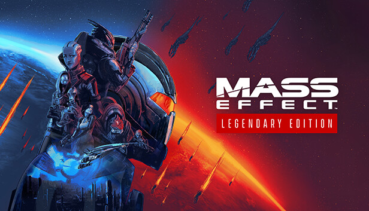
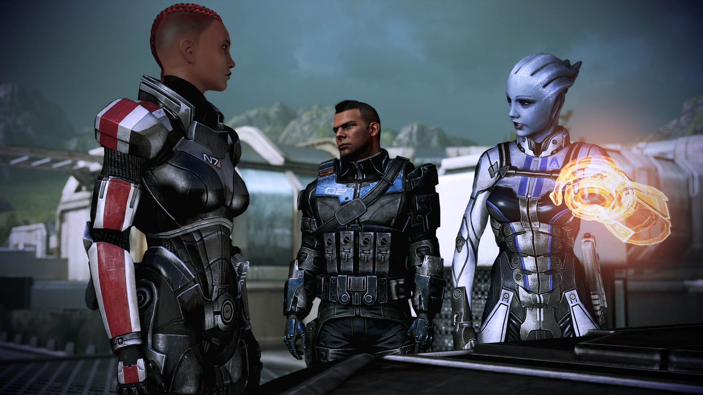
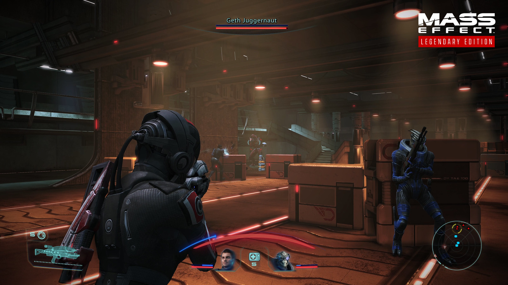
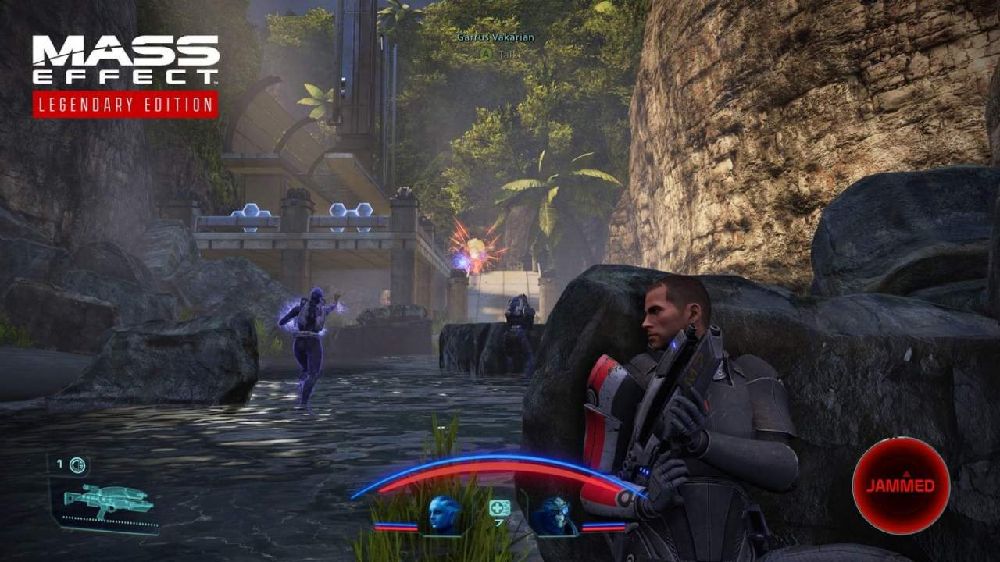

Mass Effect: Legendary Edition
De Mass Effect™ Legendary Edition bevat de singleplayer basiscontent en meer dan 40 DLC's van de met prijzen overladen games Mass Effect, Mass Effect 2 en Mass Effect 3, waaronder promowapens, pantsers en packs - geremasterd en geoptimaliseerd voor 4K Ultra HD.- Rating: 87 (Metacritic)
- Single-player
- Offline PvE
- Genre: RPG
- Ontwikkelaar: Bioware
- Uitgavedatum: 14 mei 2021




Systeemeisen
- Besturingsysteem: Windows 10 64-bit
- Processor: Intel Core i5 3570 or AMD FX-8350
- Geheugen: 8 GB RAM
- Grafische Kaart: NVIDIA GTX 760, AMD Radeon 7970 / R9280X.
- Direct X: Version 11
- Opslagruimte: 120 GB
Recenties
- "Met de Mass Effect Legendary Edition haal je voor zo'n 80 uur aan sublieme games in huis. De eerste Mass Effect is - ondanks de verbeteringen die het heeft gekregen - het meest gedateerd uit de trilogie, maar is ondanks dat nog altijd een fenomenaal begin van een franchise die voor mij RPG's en sci-fi verhalen heeft veranderd. Mass Effect 2 en 3 staan daarnaast zowel op het gebied van verhaalvertelling en gameplay nog altijd als een huis." -IGN Benelux
- "Waar het uiteindelijk met de Mass Effect Legendary Edition op neerkomt is dat het een game is die je niet mag missen als fan bent van sci-fi en RPG's. De originele trilogie van Mass Effect doet alles namelijk precies goed en doet maar zelden iets fout. Het enige wat momenteel dus jammer is, is dat de gameplay ondanks alle upgrades toch wat verouderd is, maar daar is natuurlijk niet heel veel aan te doen als je werkt met games die meer dan een decennium oud zijn. Mass Effect Legendary Edition is simpelweg een must-have voor iedereen die de oorspronkelijke games nog nooit gespeeld heeft en voor fans van het eerste uur die gewoon een excuus zoeken om weer in de schoenen van Commander Shepard te stappen. De upgrades zijn namelijk substantieel en zorgen voor een flink verbeterde ervaring ten opzichte van de originele games. Dit is ook gewoon een smeekbede naar Bioware om het volgende deel in de reeks dezelfde liefde te geven als de Mass Effect Legendare Edition, want dan komt het helemaal goed." -XGN
- "Mass Effect 3 mag dan lichtelijk een Game of Thrones-achtige anticlimax zijn, Mass Effect is een klassieker en deel 2 simpelweg een meesterwerk. Deze collectie van remasters schaaft BioWare's meestertrilogie bij tot een ietwat moderner geheel, maar dat is al meer dan genoeg reden om dit emotionele, spectaculaire en overweldigende sci-fi-epos (nogmaals) te spelen. Ik ben hoofdredacteur Brugge en dit is nog steeds mijn favoriete gametrilogie op de aarde." -Power Unlimited